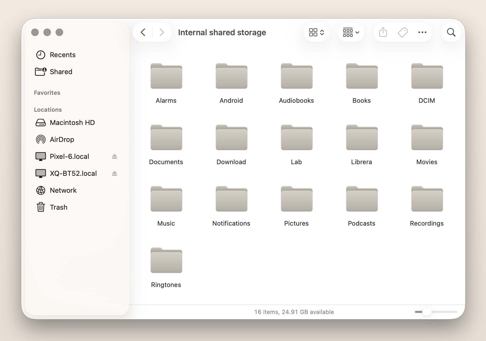
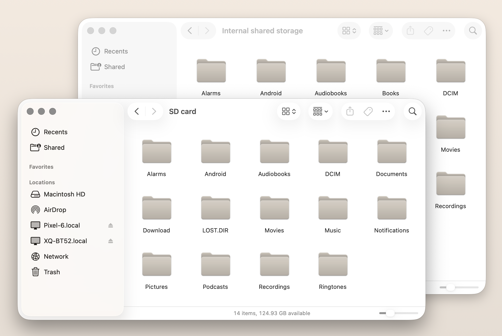

Comprador
Your Android phone, in Finder.
Plug in and go, like anything else.
Free and open source · Apple Silicon · macOS 13 or later · Signed by Apple.
A modern Android File Transfer alternative

Two phones, in Finder.
Three. As many as you have.
Each one in your sidebar. Browse one while another transfers.

Bring your own tools.
It mounts as a real volume, so rsync, cp, and cron
treat your phone like any folder. Back up the camera roll on a schedule.
$ rsync -a "$PHONE/DCIM/" ~/Pictures/phone/
Optional. Most people never need Terminal.
Not just one trick.
Cameras, e-readers, smartwatches work too.
Comprador. At your service.